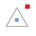
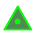
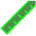

.The stations can have three display modes
When visible and the state is "selectable" (red dot), the stations are selected with a touch on the dot or the name.
The selected station is highlighted with a red dot or a boxed name.
Its data (name and coordinates) are shown in a bottom blue bar.
This bar contains three buttons:

center makes the selected station as the center of the rotations of the model
ruler toggles the measure mode. In this mode the program measures the distance between the selected station and any another station, chosen with a touch on the screeen. It computes the 3D distance and the displacements in the North, East and vertical directions. If the two stations are path connected it computes also the shortest path length, and highlights the path in green on the 3D.